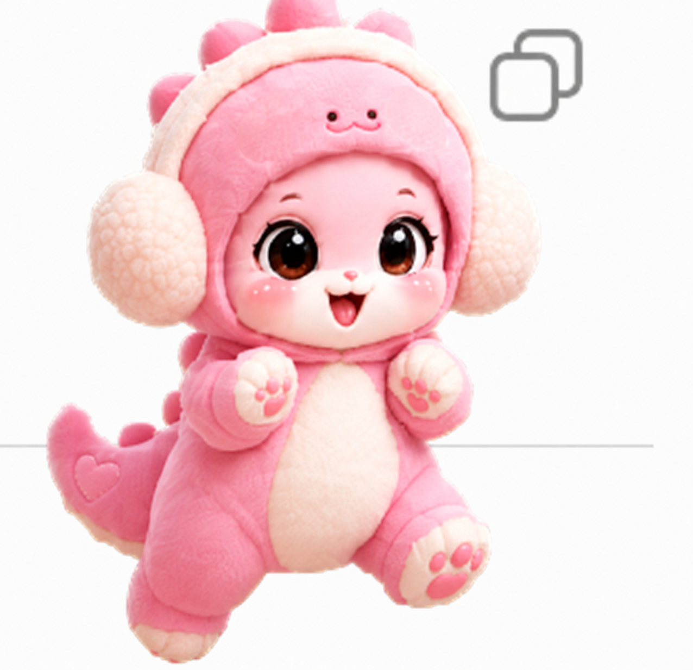
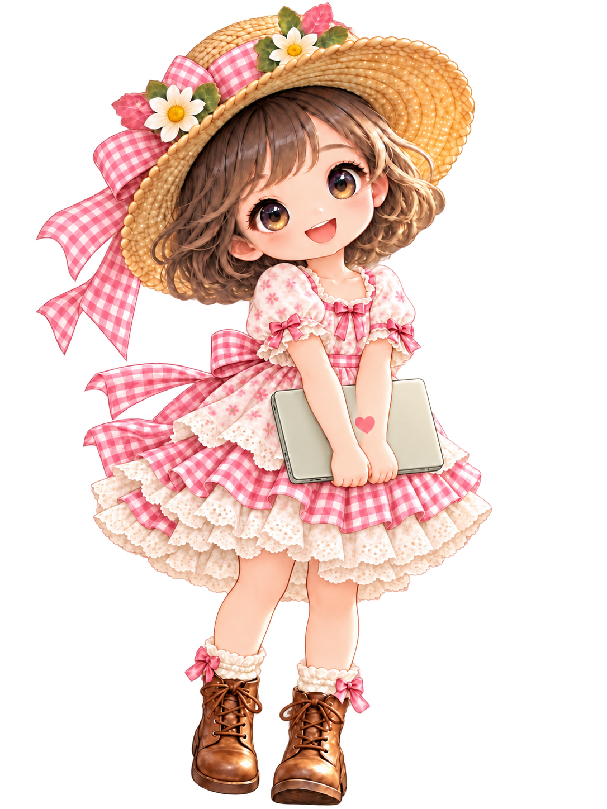
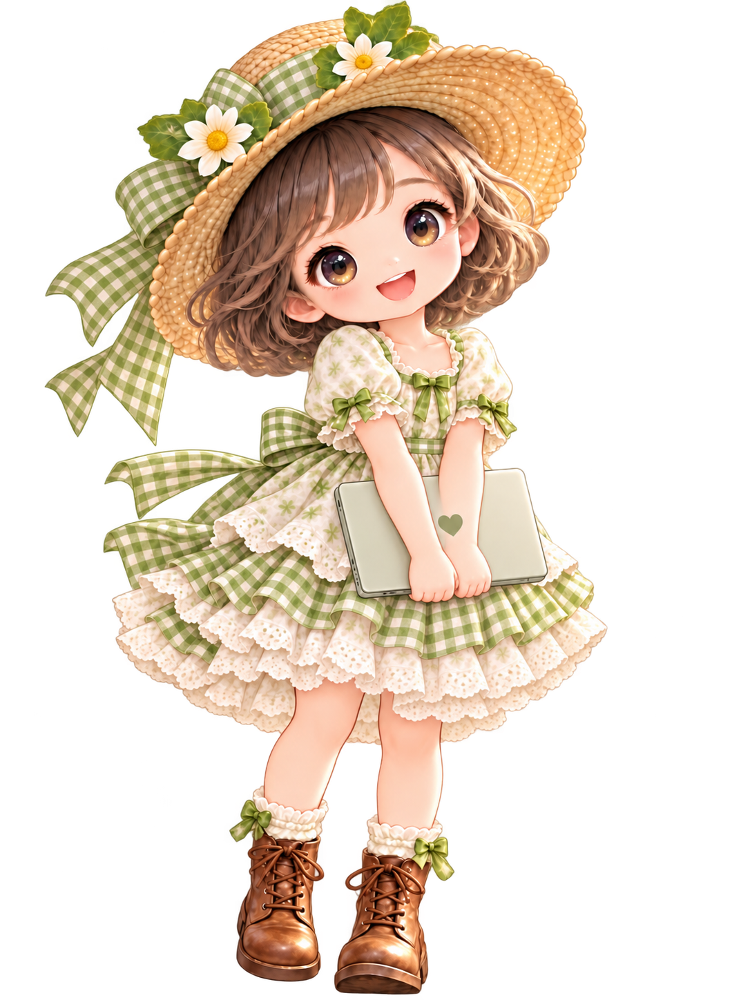

03 / 18 · 2분
미니펫 완성 예시






제공 이미지 6종: 원하는 모습 선택용 · 움직이는 결과는 실습에서 확인
06 / 18 · 3분
나만의 미니펫 구상
선택: 캐릭터 번호 하나 · 이름 하나 · 성격 하나
08 / 18 · 3분
첫 요청문 작성 실습
첫 미니펫 요청
첨부한 캐릭터 이미지를 참고해 나만의 미니펫을 만들어줘. 이름은 [이름], 색상은 [색상], 성격은 [성격]이야. [원하는 움직임]을 넣어줘. 현재 코덱스 환경에서 가능한 제작 방식과 필요한 준비를 먼저 확인하고, 내가 따라 할 순서를 쉬운 한국어로 안내해줘.
13 / 18 · 5분
수정 결과 확인
토끼·리본·표정 확인
나의 실습 결과
실습에서 만든 수정본 직접 열기
요청한 특징의 반영 여부 확인
다른 특징의 유지 여부 확인
수정본 생성 전: 결과 미확인